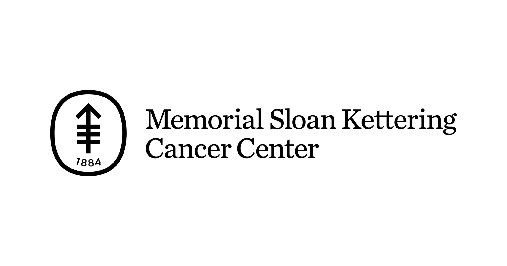

Summer Machine Learning Research Intern
Memorial Sloan Kettering Cancer Center Intern
June 2024 - August 2024
Collaborating and Developing a cutting-edge machine learning solution to enhance low-resolution 4D MRI images into high-resolution ones, facilitating improved detection of tumor cells in 4D MRI scans.